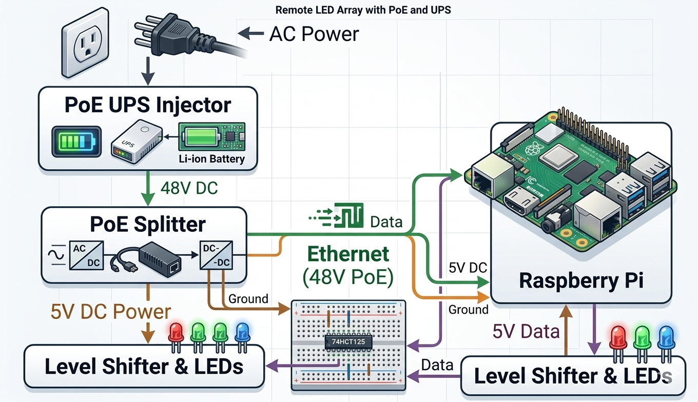
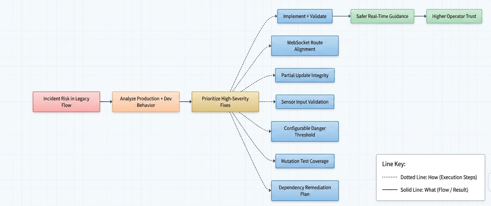

Problem Statement
Modern building emergency systems often fail to provide reliable real-time communication. Isolated components cause delays and inconsistent updates across connected endpoints.
Objective
Design a PoE-powered networked monitoring system that detects hazards (smoke, CO, heat) and dynamically guides occupants via LED paths.
How It Works
1Detection: Sensors send data to Raspberry Pi.
2Analysis: Server classifies unsafe zones.
3Guidance: LEDs light Red/Green paths.
4Dashboard: Real-time status via WebSockets.
Limitations
- Poor documentation from previous teams created significant knowledge gaps and unknowns at project start
- No sensors present on the inherited working model — substantial time spent diagnosing this
- Older Raspberry Pi model limited available computing power and sensor compatibility
- Parts delays reduced available time for testing and iteration
- Limited budget prevented experimentation to find optimal components
- Unclear rationale behind prior hardware choices increased ramp-up time
Cost Analysis
| PoE Splitter | $10.95 |
| Passive Injector | $12.99 |
| PoE+ Injector | $29.99 |
| Raspberry Pi | $35.00 |
| Touch Display | $60.00 |
| Gravity CO Sensor | $66.90 |
| Standby UPS | $59.95 |
| Control hub total | $275.78 |
| Soteria per fixture (avg) | $60.00 |
| Traditional fixture (avg) | $115.00 |
~45% cost reduction at scale compared to traditional fixture installations
System Architecture

- PoE Splitter (48V → 5V, 2.5A) — powers Raspberry Pi from Ethernet
- Passive Injector — combines power and data on a single cable
- PoE+ Injector — up to 30W for higher-draw components
- Gravity CO Sensor — detects hazardous gas, triggers emergency response
- Raspberry Pi — central controller per zone
- Raspberry Pi Touch Display — local status and alert interface
- Standby UPS — backup power during outages
Software Architecture

- GraphQL: Real-time state management. React: Low-latency dashboard updates. Docker: Containerized deployment (mkasi).
Project History
Soteria launched in 2019 as a long-term IPRO 497 initiative, growing each semester through multidisciplinary student teams spanning hardware, software, and business. Spring 2024 earned top honors at Innovation Day with a strong software architecture foundation. Fall 2025 expanded and refined the system. Spring 2026 introduced a full networked system with GraphQL, Raspberry Pi controllers, and real-time dashboards.